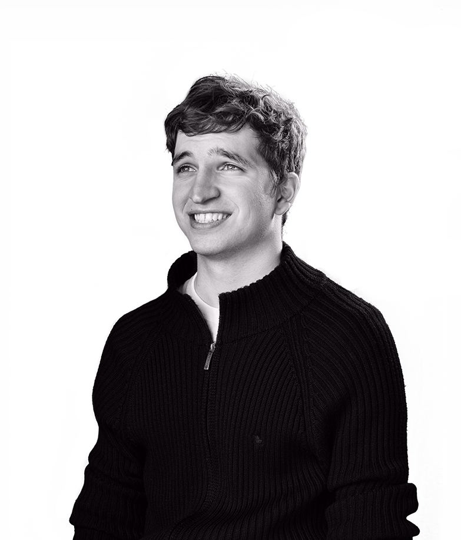
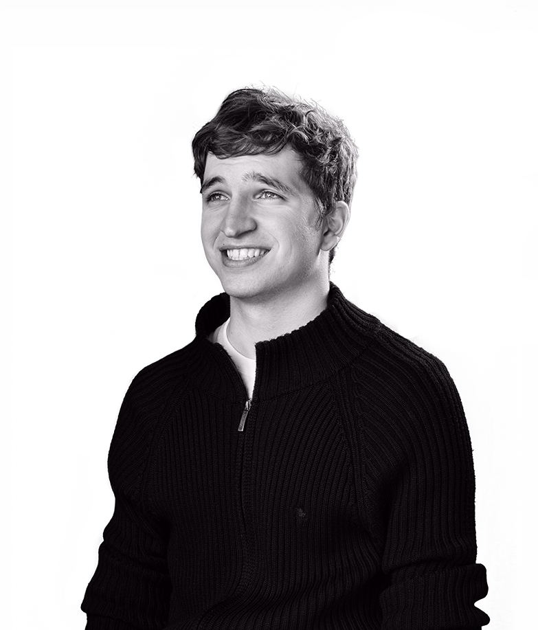

story.

Ramon Gilabert is an award winning designer and developer from a rural town in Catalonia. Right now, he is enjoying every day in Barcelona, doing amazing products as a freelancer.
 
work
Ramon Gilabert is an award winning designer and developer from a rural town in Catalonia. Right now, he is enjoying every day in Barcelona, doing amazing products as a freelancer.
A video about design every week at SketchCasts.
Puzzles iOS 10 UI kit.
I retouch images for fun.
Honorable Mention from the Awwwards jury.
Special Kudos from CSS Design Awards.
Site of the Day from CSS Awards.
Star of the Day from CSS Winner.
Thesis with honors from University of Lleida.
Top 3 alumni 2012-2016 University of Lleida.
Apple WWDC scholarship recognition.